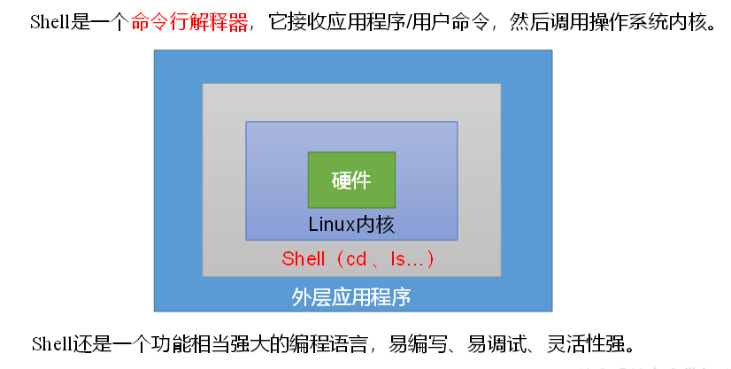
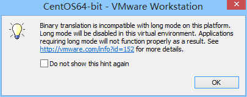

Shell
1. Shell概述
大数据工程师为什么要学习shell
（1）能够编写简单的shell脚本用于大数据集群的管理（启动、停止等）
（2）能够大概看懂运维编写的脚本
 Linux系统的核心是内核。内核控制着计算机系统上的所有硬件和软件，在必要时为应用程序分配硬件， 并根据需要执行程序中的代码。内核主要负责以下四种功能：
系统内存管理
软件程序管理
硬件设备管理
文件系统管理
简单来说Shell是一种特殊的交互式工具，核心是命令提示符，允许输入文本命令，解释命令，并在内核中执行命令。
Liunx操作系统的核心是Kernal（内核）
当应用程序在执行时，需要调用计算机 硬件CPU、内存等资源。
程序将指令发送给内核执行
为了防止程序发送一些恶意指令导致损坏内核，在内核和应用程序接口之间设置了一个中间层，称为shell
本质上来说：
shelll：是一个可以解释shell规定的语法命令的解释器，解释器负责将应用程序的指令进行检查、合法后交给内核执行，返回结果
shell语言：shell解释器要求的指定语法编写的命令
shell脚本：多条shell命令，可以编写在一个文件中，文件中的指令可以按照顺序执行，将这个文件称为shell脚本。
2.Shell解析器
Linux提供的Shell解析器有：
[atguigu@hadoop101 ~]$ cat /etc/shells
/bin/sh
/bin/bash
/sbin/nologin
/bin/dash
/bin/tcsh
/bin/csh（2）bash和sh的关系
[atguigu@hadoop101 bin]$ ll | grep bash
-rwxr-xr-x. 1 root root 941880 5月 11 2016 bash
lrwxrwxrwx. 1 root root 4 5月 27 2017 sh -> bash（3）Centos默认的解析器是bash
[atguigu@hadoop102 bin]$ echo $SHELL
/bin/bash3.Shell脚本入门
1．脚本格式
脚本以#!/bin/bash开头（指定解析器）
2．第一个Shell脚本：helloworld
（1）需求：创建一个Shell脚本，输出helloworld
（2）案例实操：
[atguigu@hadoop101 datas]$ touch helloworld.sh
[atguigu@hadoop101 datas]$ vim helloworld.sh在helloworld.sh中输入如下内容
#!/bin/bash
echo "helloworld"（3）脚本的常用执行方式
第一种：采用bash或sh+脚本的相对路径或绝对路径（不用赋予脚本+x权限）
sh+脚本的相对路径
[atguigu@hadoop101 datas]$ sh helloworld.sh Helloworld
sh+脚本的绝对路径
[atguigu@hadoop101 datas]$ sh /home/atguigu/datas/helloworld.sh helloworld
bash+脚本的相对路径
[atguigu@hadoop101 datas]$ bash helloworld.sh Helloworld
bash+脚本的绝对路径
[atguigu@hadoop101 datas]$ bash /home/atguigu/datas/helloworld.sh Helloworld
第二种：采用输入脚本的绝对路径或相对路径执行脚本（必须具有可执行权限+x）
（a）首先要赋予helloworld.sh 脚本的+x权限
[atguigu@hadoop101 datas]$ chmod +x helloworld.sh（b）执行脚本
相对路径
[atguigu@hadoop101 datas]$ ./helloworld.sh Helloworld
绝对路径
[atguigu@hadoop101 datas]$ /home/atguigu/datas/helloworld.sh Helloworld
注意：第一种执行方法，本质是bash解析器帮你执行脚本，所以脚本本身不需要执行权限。第二种执行方法，本质是脚本需要自己执行，所以需要执行权限。
3．第二个Shell脚本：多命令处理
（1）需求：
在/home/atguigu/目录下创建一个banzhang.txt,在banzhang.txt文件中增加“I love cls”。
（2）案例实操：
[atguigu@hadoop101 datas]$ touch batch.sh[atguigu@hadoop101 datas]$ vim batch.sh在batch.sh中输入如下内容
#!/bin/bashcd /home/atguigutouch cls.txtecho "I love cls" >>cls.txt4.Shell中的变量
4.1系统变量
- 常用系统变量
$HOME、$PWD、$SHELL、$USER等- 案例实操
（1）查看系统变量的值
[atguigu@hadoop101 datas]$ echo $HOME/home/atguigu（2）显示当前Shell中所有变量：set
[atguigu@hadoop101 datas]$ setBASH=/bin/bashBASH_ALIASES=()BASH_ARGC=()BASH_ARGV=()4.2自定义变量
1．基本语法
（1）定义变量：变量=值
（2）撤销变量：unset 变量
（3）声明静态变量：readonly变量，注意：不能unset
2．变量定义规则
（1）变量名称可以由字母、数字和下划线组成，但是不能以数字开头，==环境变量名建议大写==。
（2）==等号两侧不能有空格==
（3）在bash中，变量默认类型都是字符串类型，无法直接进行数值运算。
（4）变量的值如果有空格，需要使用双引号或单引号括起来。
3．案例实操
（1）定义变量A
[atguigu@hadoop101 datas]$ A=5[atguigu@hadoop101 datas]$ echo $A5 （2）给变量A重新赋值
[atguigu@hadoop101 datas]$ A=8[atguigu@hadoop101 datas]$ echo $A8 （3）撤销变量A
[atguigu@hadoop101 datas]$ unset A[atguigu@hadoop101 datas]$ echo $A （4）声明静态(只读)的变量B=2，不能unset
[atguigu@hadoop101 datas]$ readonly B=2[atguigu@hadoop101 datas]$ echo $B2[atguigu@hadoop101 datas]$ B=9-bash: B: readonly variable （5）在bash中，变量默认类型都是字符串类型，无法直接进行数值运算
[atguigu@hadoop102 ~]$ C=1+2[atguigu@hadoop102 ~]$ echo $C1+2（6）变量的值如果有空格，需要使用双引号或单引号括起来,无需注意数据的类型
[atguigu@hadoop102 ~]$ D=I love banzhang-bash: world: command not found[atguigu@hadoop102 ~]$ D="I love banzhang"[atguigu@hadoop102 ~]$ echo $AI love banzhang （7）可把变量提升为全局环境变量，可供其他Shell程序使用
[atguigu@hadoop101 datas]$ vim helloworld.sh 在helloworld.sh文件中增加echo $B#!/bin/bashecho "helloworld"echo $B[atguigu@hadoop101 datas]$ ./helloworld.sh Helloworld发现并没有打印输出变量B的值。
[atguigu@hadoop101 datas]$ export B[atguigu@hadoop101 datas]$ ./helloworld.sh helloworld （8）使用双引号可以识别变量
[root@0725pc shells]# echo $Ahello[root@0725pc shells]# B="hello $A"[root@0725pc shells]# echo $Bhello hello[root@0725pc shells]# C='hello $A'[root@0725pc shells]# echo $Chello $A（9）使用反引号，将命令运行的结果赋值给参数，即A=ll 等同于 A=$(ll)
[root@0725pc shells]# D=`ll`[root@0725pc shells]# echo $D总用量 4 -rwxr--r--. 1 root root 23 10月 8 21:36 test1.sh[root@0725pc shells]# E=$(ll)[root@0725pc shells]# echo $E总用量 4 -rwxr--r--. 1 root root 23 10月 8 21:36 test1.sh4.3特殊变量：$n
1．基本语法
$n （功能描述：n为数字，$0代表该脚本名称，$1-$9代表第一到第九个参数，十以上的参数，十以上的参数需要用大括号包含，如${10}）
2．案例实操
（1）输出该脚本文件名称、输入参数1和输入参数2 的值
[atguigu@hadoop101 datas]$ touch parameter.sh [atguigu@hadoop101 datas]$ vim parameter.sh#!/bin/bashecho "$0 $1 $2"[atguigu@hadoop101 datas]$ chmod 777 parameter.sh[atguigu@hadoop101 datas]$ ./parameter.sh cls xz./parameter.sh cls xz4.4特殊变量：$#
1．基本语法
$# （功能描述：获取所有输入参数个数，常用于循环）。
2．案例实操
（1）获取输入参数的个数
[atguigu@hadoop101 datas]$ vim parameter.sh#!/bin/bashecho "$0 $1 $2"echo $#[atguigu@hadoop101 datas]$ chmod 777 parameter.sh[atguigu@hadoop101 datas]$ ./parameter.sh cls xzparameter.sh cls xz 24.5特殊变量：$*、$@
1．基本语法
$* （功能描述：这个变量代表命令行中所有的参数，$*把所有的参数看成一个整体）
$@ （功能描述：这个变量也代表命令行中所有的参数，不过$@把每个参数区分对待）
2．案例实操
（1）打印输入的所有参数
[atguigu@hadoop101 datas]$ vim parameter.sh#!/bin/bashecho "$0 $1 $2"echo $#echo $*echo $@[atguigu@hadoop101 datas]$ bash parameter.sh 1 2 3parameter.sh 1 231 2 31 2 34.6特殊变量$？
1．基本语法
$？ （功能描述：最后一次执行的命令的返回状态。如果这个变量的值为0，证明上一个命令正确执行；如果这个变量的值为非0（具体是哪个数，由命令自己来决定），则证明上一个命令执行不正确了。）
2．案例实操
（1）判断helloworld.sh脚本是否正确执行
[atguigu@hadoop101 datas]$ ./helloworld.sh hello world[atguigu@hadoop101 datas]$ echo $?05.运算符
1．基本语法
（1）“$((运算式))”或“$[运算式]”
（2）expr + , - , *, /, % 加，减，乘，除，取余
注意：expr运算符间要有空格
2．案例实操：
（1）计算3+2的值
[atguigu@hadoop101 datas]$ expr 2 + 35（2）计算3-2的值
[atguigu@hadoop101 datas]$ expr 3 - 2 1（3）计算（2+3）X4的值
（a）expr一步完成计算
[atguigu@hadoop101 datas]$ expr `expr 2 + 3` \* 420（b）采用$[运算式]方式
[atguigu@hadoop101 datas]# S=$[(2+3)*4][atguigu@hadoop101 datas]# echo $S6.条件判断
- 基本语法
[ condition ]（==注意condition前后要有空格==）
注意：条件非空即为true，[ atguigu ]返回true，[] 返回false。
- 常用判断条件
（1）两个整数之间比较
= 字符串比较
-lt 小于（less than） -le 小于等于（less equal）
-eq 等于（equal） -gt 大于（greater than）
-ge 大于等于（greater equal） -ne 不等于（Not equal）
（2）按照文件权限进行判断
-r 有读的权限（read） -w 有写的权限（write）
-x 有执行的权限（execute）
（3）按照文件类型进行判断
-f 文件存在并且是一个常规的文件（file）
-e 文件存在（existence） -d 文件存在并是一个目录（directory）
- 案例实操
（1）23是否大于等于22
[atguigu@hadoop101 datas]$ [ 23 -ge 22 ][atguigu@hadoop101 datas]$ echo $?0 （2）helloworld.sh是否具有写权限
[atguigu@hadoop101 datas]$ [ -w helloworld.sh ][atguigu@hadoop101 datas]$ echo $?0 （3）/home/atguigu/cls.txt目录中的文件是否存在
[atguigu@hadoop101 datas]$ [ -e /home/atguigu/cls.txt ][atguigu@hadoop101 datas]$ echo $?1（4）多条件判断（&& 表示前一条命令执行成功时，才执行后一条命令，|| 表示上一条命令执行失败后，才执行下一条命令）
[atguigu@hadoop101 ~]$ [ condition ] && echo OK || echo notokOK[atguigu@hadoop101 datas]$ [ condition ] && [ ] || echo notoknotok7.流程控制（重点）
7.1 if 判断
- 基本语法
if [ 条件判断式 ] ; then 程序 fi 或者
if [ 条件判断式 ] then 程序 fi- 多分支
if [ 条件判断式 ] then 程序 elif [ 条件判断式 ] then 程序else 程序fi 注意事项：
（1）[ 条件判断式 ]，中括号和条件判断式之间必须有==空格==
（2）if后要有空格
2．案例实操
（1）输入一个数字，如果是1，则输出banzhang zhen shuai，如果是2，则输出cls zhen mei，如果是其它，什么也不输出。
[atguigu@hadoop101 datas]$ touch if.sh[atguigu@hadoop101 datas]$ vim if.sh#!/bin/bashif [ $1 -eq "1" ]thenecho "banzhang zhen shuai"elif [ $1 -eq "2" ]thenecho "cls zhen mei"fi[atguigu@hadoop101 datas]$ chmod 777 if.sh
[atguigu@hadoop101 datas]$ ./if.sh 1
banzhang zhen shuai
7.2 case 语句
1．基本语法
case $变量名 in "值1"） 如果变量的值等于值1，则执行程序1 ;; "值2"） 如果变量的值等于值2，则执行程序2 ;; …省略其他分支… *） 如果变量的值都不是以上的值，则执行此程序 ;; esac注意事项：
case行尾必须为单词“in”，每一个模式匹配必须以右括号“）”结束。
双分号“****;;****”表示命令序列结束，相当于java中的break。
最后的“）”表示默认模式，相当于java中的default，不可以加双引号。
2．案例实操
（1）输入一个数字，如果是1，则输出banzhang，如果是2，则输出cls，如果是其它，输出renyao。
[atguigu@hadoop101 datas]$ touch case.sh[atguigu@hadoop101 datas]$ vim case.sh!/bin/bashcase $1 in"1") echo "banzhang";;"2") echo "cls";;*) echo "renyao";;esac[atguigu@hadoop101 datas]$ chmod 777 case.sh[atguigu@hadoop101 datas]$ ./case.sh 117.3 for 循环
1．基本语法1
for (( 初始值;循环控制条件;变量变化 )) do 程序 done2．案例实操
（1）从1加到100
[atguigu@hadoop101 datas]$ touch for1.sh[atguigu@hadoop101 datas]$ vim for1.sh#!/bin/bashs=0for((i=0;i<=100;i++))do s=$[$s+$i]doneecho $s[atguigu@hadoop101 datas]$ chmod 777 for1.sh [atguigu@hadoop101 datas]$ ./for1.sh “5050”[root@0725pc shells]# tail -n 4 test1.sh SUM2=0for((i=0;i<=10;i++));do SUM2=$(($SUM2+$i)); doneecho "从1加到100的值是：$SUM2"[root@0725pc shells]# ./test1.sh 从1加到100的值是：553．基本语法2
for 变量 in 值1 值2 值3… do 程序 done4．案例实操
（1）打印所有输入参数
[atguigu@hadoop101 datas]$ touch for2.sh[atguigu@hadoop101 datas]$ vim for2.sh#!/bin/bash#打印数字for i in $* do echo "ban zhang love $i " done[atguigu@hadoop101 datas]$ chmod 777 for2.sh [atguigu@hadoop101 datas]$ bash for2.sh cls xz bdban zhang love clsban zhang love xzban zhang love bd多种写法啊
[root@0725pc shells]# cat test2.sh #! /bin/bashfor i in 1 2 3do echo $idoneecho "--------------------"for i in 1 2 3 ;do echo $i;doneecho "--------------------"for i in {1..3};do echo $i;done[root@0725pc shells]# ./test2.sh 123--------------------123--------------------123（2）比较$*和$@区别
（a）$*和$@都表示传递给函数或脚本的所有参数，不被双引号“”包含时，都以$1 $2 …$n的形式输出所有参数。
[atguigu@hadoop101 datas]$ touch for.sh[atguigu@hadoop101 datas]$ vim for.sh#!/bin/bash for i in $*do echo "ban zhang love $i "donefor j in $@do echo "ban zhang love $j"done[atguigu@hadoop101 datas]$ bash for.sh cls xz bdban zhang love cls ban zhang love xz ban zhang love bd ban zhang love clsban zhang love xzban zhang love bd（b）当它们被双引号“”包含时，“$*”会将所有的参数作为一个整体，以“$1 $2 …$n”的形式输出所有参数；“$@”会将各个参数分开，以“$1” “$2”…”$n”的形式输出所有参数。
[atguigu@hadoop101 datas]$ vim for.sh#!/bin/bash for i in "$*" #$*中的所有参数看成是一个整体，所以这个for循环只会循环一次 do echo "ban zhang love $i" done for j in "$@" #$@中的每个参数都看成是独立的，所以“$@”中有几个参数，就会循环几次 do echo "ban zhang love $j" done[atguigu@hadoop101 datas]$ chmod 777 for.sh[atguigu@hadoop101 datas]$ bash for.sh cls xz bdban zhang love cls xz bdban zhang love clsban zhang love xzban zhang love bd7.4 while 循环
1．基本语法
while [ 条件判断式 ] do 程序 done2．案例实操
（1）从1加到100
[atguigu@hadoop101 datas]$ touch while.sh[atguigu@hadoop101 datas]$ vim while.sh#!/bin/bashs=0i=1while [ $i -le 100 ]do s=$[$s+$i] i=$[$i+1]doneecho $s[atguigu@hadoop101 datas]$ chmod 777 while.sh [atguigu@hadoop101 datas]$ ./while.sh 5050 （2）从0开始，累加加11次
[root@0725pc shells]# bash test3.sh 11[root@0725pc shells]# cat test3.sh #! /bin/bashNUM=0while((NUM<=10));do let NUM++; doneecho $NUM注意事项：
while后面需要有空格
8.read读取控制台输入
1．基本语法
read(选项)(参数)选项：-p：指定读取值时的提示符；-t：指定读取值时等待的时间（秒）。参数 变量：指定读取值的变量名2．案例实操
（1）提示7秒内，读取控制台输入的名称
[atguigu@hadoop101 datas]$ touch read.sh[atguigu@hadoop101 datas]$ vim read.sh#!/bin/bashread -t 7 -p "Enter your name in 7 seconds " NAMEecho $NAME[atguigu@hadoop101 datas]$ ./read.sh Enter your name in 7 seconds xiaozexiaoz9.函数
9.1 系统函数
1．basename基本语法
basename [string / pathname] [suffix] （功能描述：basename命令会删掉所有的前缀包括最后一个（‘/’）字符，然后将字符串显示出来。
选项：
suffix为后缀，如果suffix被指定了，basename会将pathname或string中的suffix去掉。
2．案例实操
（1）截取该/home/atguigu/banzhang.txt路径的文件名称
[atguigu@hadoop101 datas]$ basename /home/atguigu/banzhang.txt banzhang.txt[atguigu@hadoop101 datas]$ basename /home/atguigu/banzhang.txt .txtbanzhang- dirname基本语法
dirname 文件绝对路径 （功能描述：从给定的包含绝对路径的文件名中去除文件名（非目录的部分），然后返回剩下的路径（目录的部分））
4．案例实操
（1）获取banzhang.txt文件的路径
[atguigu@hadoop101 ~]$ dirname /home/atguigu/banzhang.txt /home/atguigu9.2 自定义函数
1．基本语法
[ function ] funname[()]{ Action; [return int;]}2．经验技巧
（1）必须在调用函数地方之前，先声明函数，shell脚本是逐行运行。不会像其它语言一样先编译。
（2）函数返回值，只能通过$?系统变量获得，可以显示加return返回，如果不加，将以最后一条命令运行结果，作为返回值。return后跟数值n(0-255)
3．案例实操
（1）计算两个输入参数的和
[atguigu@hadoop101 datas]$ touch fun.sh[atguigu@hadoop101 datas]$ vim fun.sh#!/bin/bashfunction sum(){ s=0 s=$[ $1 + $2 ] echo "$s"}read -p "Please input the number1: " n1;read -p "Please input the number2: " n2;sum $n1 $n2;[atguigu@hadoop101 datas]$ chmod 777 fun.sh[atguigu@hadoop101 datas]$ ./fun.sh Please input the number1: 2Please input the number2: 5710.Shell工具（重点）
10.1 wc
wc命令用来计算数字。利用wc指令我们可以计算文件的Byte数、字数或是列数，若不指定文件名称，或是所给予的文件名为“-”，则wc指令会从标准输入设备读取数据。
1. 基本用法
wc [选项参数] filename
2. 参数说明
| 选项参数 | 功能 |
|---|---|
| -l | 统计文件行数 |
| -w | 统计文件的单词数 |
| -m | 统计文件的字符数 |
| -c | 统计文件的字节数 |
- 案例实操
统计redis_6379.conf文件的行数、单词数、字节数！
[root@0725pc myredis]# ll | grep redis_6379.conf-rw-r--r--. 1 root root 188 10月 9 15:33 redis_6379.conf[root@0725pc myredis]# cat -n redis_6379.conf 1 include /root/myredis/redis.conf 2 pidfile "/var/run/redis_6379.pid" 3 port 6379 4 dbfilename "dump_6379.rdb" 5 cluster-enabled yes 6 cluster-config-file nodes-6379.conf 7 cluster-node-timeout 15000 8 [root@0725pc myredis]# wc -w redis_6379.conf 14 redis_6379.conf[root@0725pc myredis]# wc -l redis_6379.conf 8 redis_6379.conf[root@0725pc myredis]# wc -m redis_6379.conf 188 redis_6379.conf10.2 cut
cut的工作就是“剪”，具体的说就是在文件中负责剪切数据用的。cut 命令从文件的每一行剪切字节、字符和字段并将这些字节、字符和字段输出。
1.基本用法
cut [选项参数] filename
说明：默认分隔符是制表符
2.选项参数说明
| 选项参数 | 功能 |
|---|---|
| -f | f为fileds，列号，提取第几列 |
| -d | d为Descriptor分隔符，按照指定分隔符分割列 |
| -c | 指定具体字符 |
3.案例实操
（0）以：为间隔，切割PATH环境变量的第一列
[root@0725pc ~]# echo $PATH/usr/lib64/qt-3.3/bin:/usr/local/sbin:/usr/local/bin:/sbin:/bin:/usr/sbin:/usr/bin:/opt/jdk1.8.0_121/bin:/root/bin[root@0725pc ~]# echo $PATH | cut -d ':' -f 1/usr/lib64/qt-3.3/bin（2）以：为间隔，切割PATH环境变量的第二、三列
[root@0725pc ~]# echo $PATH/usr/lib64/qt-3.3/bin:/usr/local/sbin:/usr/local/bin:/sbin:/bin:/usr/sbin:/usr/bin:/opt/jdk1.8.0_121/bin:/root/bin[root@0725pc ~]# echo $PATH | cut -d ':' -f 2,3/usr/local/sbin:/usr/local/bin（3）选取系统PATH变量值，第2个“：”开始后的所有路径：
[atguigu@hadoop101 datas]$ echo $PATH/usr/lib64/qt-3.3/bin:/usr/local/bin:/bin:/usr/bin:/usr/local/sbin:/usr/sbin:/sbin:/home/atguigu/bin[atguigu@hadoop102 datas]$ echo $PATH | cut -d: -f 3-/usr/local/bin:/bin:/usr/bin:/usr/local/sbin:/usr/sbin:/sbin:/home/atguigu/bin（4）以：为间隔，切割PATH环境变量的第一到三列，和第五列
[root@0725pc ~]# echo $PATH/usr/lib64/qt-3.3/bin:/usr/local/sbin:/usr/local/bin:/sbin:/bin:/usr/sbin:/usr/bin:/opt/jdk1.8.0_121/bin:/root/bin[root@0725pc ~]# echo $PATH | cut -d ':' -f 1-3,5/usr/lib64/qt-3.3/bin:/usr/local/sbin:/usr/local/bin:/bin（5）切割ifconfig 后打印的IP地址
[atguigu@hadoop101 datas]$ ifconfig eth0 | grep "inet addr" | cut -d: -f 2 | cut -d" " -f1ifconfig ens33 |grep 'netmask' | cut -d 't' -f 2 |cut -d " " -f 2192.168.1.10210.3 awk
一个强大的文本分析工具，把文件逐行的读入，以空格为默认分隔符将每行切片，切开的部分再进行分析处理。
- 基本用法
awk [选项参数] ‘pattern1{action1} pattern2{action2}…’ filename
pattern：表示AWK在数据中查找的内容，就是匹配模式
action：在找到匹配内容时所执行的一系列命令
- 选项参数说明
| 选项参数 | 功能 |
|---|---|
| -F | 指定输入文件折分隔符 |
| -v | 赋值一个用户定义变量 |
- 案例实操
（0）数据准备
[atguigu@hadoop102 datas]$ sudo cp /etc/passwd ./（1）搜索passwd文件以root关键字开头的所有行，并输出该行的第7列。
[atguigu@hadoop102 datas]$ awk -F: '/^root/{print $7}' passwd /bin/bash（2）搜索passwd文件以root关键字开头的所有行，并输出该行的第1列和第7列，中间以“，”号分割。
[atguigu@hadoop102 datas]$ awk -F: '/^root/{print $1","$7}' passwd root,/bin/bash注意：只有匹配了patter的行才会执行action
（3）只显示/etc/passwd的第一列和第七列，以逗号分割，且在所有行前面添加列名user，shell在最后一行添加”dahaige，/bin/zuishuai”。
[atguigu@hadoop102 datas]$ awk -F : 'BEGIN{print "user, shell"} {print $1","$7} END{print "dahaige,/bin/zuishuai"}' passwduser, shellroot,/bin/bashbin,/sbin/nologin。。。atguigu,/bin/bashdahaige,/bin/zuishuai注意：BEGIN 在所有数据读取行之前执行；END 在所有数据执行之后执行。
（4）将passwd文件中的用户id增加数值1并输出
[atguigu@hadoop102 datas]$ awk -v i=1 -F: '{print $3+i}' passwd1
2
3
4
- awk的内置变量
| 变量 | 说明 |
|---|---|
| FILENAME | 文件名 |
| NR | 已读的记录数（行号） |
| NF | 浏览记录的域的个数（切割后列的个数） |
- 案例实操
（1）统计passwd文件名，每行的行号，每行的列数
[atguigu@hadoop102 datas]$ awk -F: '{print "filename:" FILENAME ", linenumber:" NR ",columns:" NF}' passwd filename:passwd, linenumber:1,columns:7filename:passwd, linenumber:2,columns:7filename:passwd, linenumber:3,columns:7 （2）切割IP
[atguigu@hadoop102 datas]$ ifconfig eth0 | grep "inet addr" | awk -F: '{print $2}' | awk -F " " '{print $1}' ifconfig |grep "netmask" | awk -F "inet" '{print $2}'| awk -F " " '{print $1}'192.168.1.102 （3）查询sed.txt中空行所在的行号
[atguigu@hadoop102 datas]$ awk '/^$/{print NR}' sed.txt 510.4 sort
sort命令是在Linux里非常有用，它将文件进行排序，并将排序结果标准输出。默认情况以第一个字符串的字典顺序来排序！
- 基本语法
sort(选项)(参数)
表1-57
| 选项 | 说明 |
|---|---|
| -n | 依照数值的大小排序 |
| -r | 以相反的顺序来排序 |
| -t | 设置排序时所用的分隔字符，默认使用TAB |
| -k | 指定需要排序的列 |
| -u | u为unique的缩写，即如果出现相同的数据，只出现一行 |
参数：指定待排序的文件列表
- 案例实操
（0）数据准备
[atguigu@hadoop102 datas]$ touch sort.sh[atguigu@hadoop102 datas]$ vim sort.sh bb:40:5.4bd:20:4.2xz:50:2.3cls:10:3.5ss:30:1.6（1）按照“：”分割后的第三列倒序排序。
[atguigu@hadoop102 datas]$ sort -t : -nrk 3 sort.sh bb:40:5.4bd:20:4.2cls:10:3.5xz:50:2.3ss:30:1.611.常见错误及解决方案
- 虚拟化支持异常情况如下几种情况
图1-169
图1-170
图1-171
问题原因：宿主机BIOS设置中的硬件虚拟化被禁用了
解决办法：需要打开笔记本BIOS中的IVT对虚拟化的支持
图1-172
12.企业真实面试题
12.1 百度&考满分
问题：Linux常用命令
参考答案：find、df、tar、ps、top、netstat等。（尽量说一些高级命令）
12.2 瓜子二手车
问题：Linux查看内存、磁盘存储、io 读写、端口占用、进程等命令
答案：1、查看内存：top2、查看磁盘存储情况：df -h3、查看磁盘IO读写情况：iotop（需要安装一下：yum install iotop）、iotop -o（直接查看输出比较高的磁盘读写程序）4、查看端口占用情况：netstat -tunlp | grep 端口号5、查看进程：ps aux12.3 京东
问题1：使用Linux命令查询file1中空行所在的行号
答案：[atguigu@hadoop102 datas]$ awk '/^$/{print NR}' sed.txt 5问题2：有文件chengji.txt内容如下:
张三 40
李四 50
王五 60
使用Linux命令计算第二列的和并输出
[atguigu@hadoop102 datas]$ cat chengji.txt | awk -F " " '{sum+=$2} END{print sum}'15012.4 搜狐&和讯网
问题1：Shell脚本里如何检查一个文件是否存在？如果不存在该如何处理？
#!/bin/bashif [ -f file.txt ]; then echo "文件存在!"else echo "文件不存在!"fi12.5 新浪
问题1：用shell写一个脚本，对文本中无序的一列数字排序
[root@CentOS6-2 ~]# cat test.txt98765432101[root@CentOS6-2 ~]# sort -n test.txt|awk '{a+=$0;print $0}END{print "SUM="a}'12345678910SUM=5512.6 金和网络
问题1：请用shell脚本写出查找当前文件夹（/home）下所有的文本文件内容中包含有字符”shen”的文件名称
[atguigu@hadoop102 datas]$ grep -r "shen" /home | cut -d ":" -f 1/home/atguigu/datas/sed.txt/home/atguigu/datas/cut.txt13.正则表达式入门
正则表达式使用单个字符串来描述、匹配一系列符合某个语法规则的字符串。在很多文本编辑器里，正则表达式通常被用来检索、替换那些符合某个模式的文本。在Linux中，grep，awk等命令都支持通过正则表达式进行模式匹配。
13.1 常规匹配
一串不包含特殊字符的正则表达式匹配它自己，例如：
[root@hadoop101 datas]$ cat /etc/passwd | grep atguigu就会匹配所有包含atguigu的行
13.2 常用特殊字符
1****）特殊字符：^
^ 匹配一行的开头，例如：
[root@hadoop101 datas]$ cat /etc/passwd | grep ^a会匹配出所有以a开头的行
2****）特殊字符：$
$ 匹配一行的结束，例如
[root@hadoop101 datas]$ cat /etc/passwd | grep t$会匹配出所有以t结尾的行
思考：^$ 匹配什么？
3****）特殊字符：.
. 匹配一个任意的字符，例如
[root@hadoop101 datas]$ cat /etc/passwd | grep r..t会匹配包含rabt,rbbt,rxdt,root等的所有行
4****）特殊字符：*
* 不单独使用，他和上一个字符连用，表示匹配上一个字符0次或多次，例如
[root@hadoop101 datas]$ cat /etc/passwd | grep ro*t会匹配rt, rot, root, rooot, roooot等所有行
思考：.* 匹配什么？
5****）特殊字符：[ ]
[ ] 表示匹配某个范围内的一个字符，例如
[6,8]——匹配6或者8
[a-z]——匹配一个a-z之间的字符
[a-z]*—–匹配任意字母字符串
[a-c, e-f]-匹配a-c或者e-f之间的任意字符
[root@hadoop101 datas]$ cat /etc/passwd | grep r[a,b,c]*t会匹配rat, rbt, rabt, rbact等等所有行
*6**）特殊字符：*
\ 表示转义，并不会单独使用。由于所有特殊字符都有其特定匹配模式，当我们想匹配某一特殊字符本身时（例如，我想找出所有包含 ‘$’ 的行），就会碰到困难。此时我们就要将转义字符和特殊字符连用，来表示特殊字符本身，例如
[root@hadoop101 datas]$ cat /etc/passwd | grep a\$b就会匹配所有包含 a$b 的行。